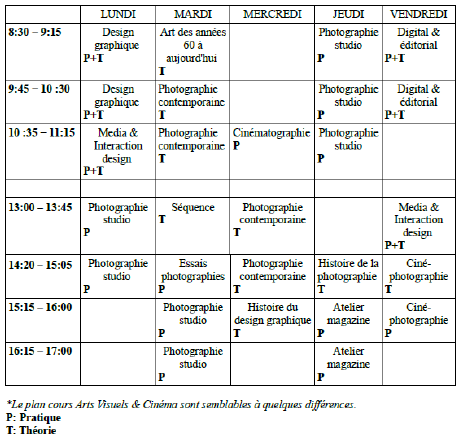

Horaire type
Voici un horaire type pouvant correspondre à l'horaire d'un étudiant en photographie (les horaires des autres sections en diffèrent très peu)

Règlement intérieur EdAC
FONCTIONNEMENT DE L'ECOLE
Art 1 :
Chaque étudiant se doit de veiller à ce que le matériel prêté par l'école ne soit ni perdu ni détérioré (livres, matériaux,...). Dans la cas contraire le remboursement pourra être exigé.
Art 2 :
Tout changement de domicile, de coordonnées téléphoniques, doivent être signalés rapidement.
Art 3 :
Le stationnement de tous les véhicules est interdit dans l’entrée de l’école.
ABSENCES-SORTIES
Art 4 :
Toute absence lors d'examen doit être justifiée par écrit. Prévenir (en cas de maladie ou d’absence).
SANCTIONS
Art 5 :
Tout travaux ayant été plagiés seront considérés comme invalides, et sanctionné de la note de 1. De plus, le professeur se donne le droit d'imposer un nouveau projet à l'élève concerné.
Art 6 :
Une bonne intégration à la vie social devrait rendre inutile toute sanction Tout châtiment corporel pour quelque raison que ce soit est strictement interdit.
Aucune sanction ne peut être infligée à un étudiant pour insuffisance de résultat.
Le non-suivi au règlement intérieur de l’école peuvent donner lieu à des réprimandes.
Art 7 :
Le professeur s’interdit tout comportement, geste ou parole qui traduirait de sa part indifférence ou mépris à l’égard de l’étudiant. De même, les étudiants doivent s’interdire tout comportement, geste ou parole qui porterait atteinte à
la fonction ou à la personne du maître, du personnel de l’école et au respect à leurs camarades.
Retour à la page d'accueil